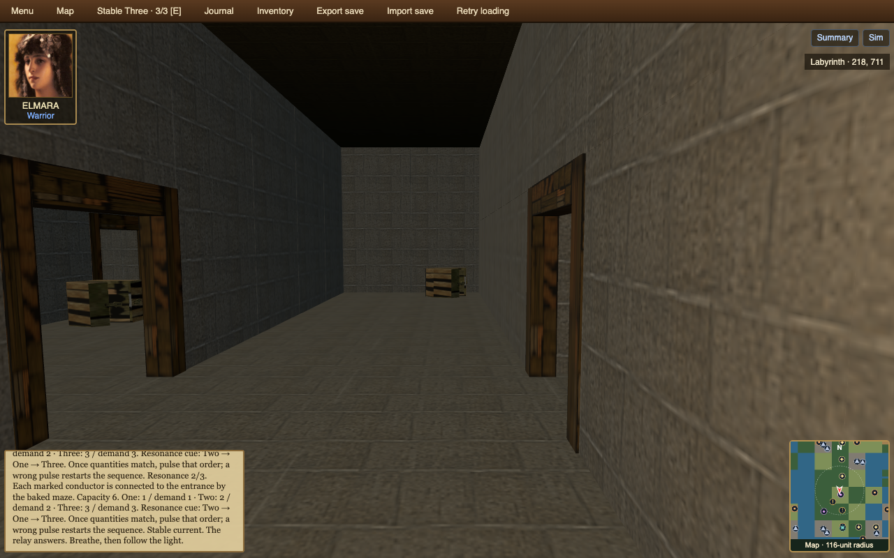

Explore a world of settlements, shrines, caves, and labyrinths. Meet its people, restore the Concordance Grid, and follow a repair from Wammigmig toward the Measured Oasis.
The first three main-story chapters are playable, alongside local quests and exploration. The final two capital chapters are planned.
Map
Location filters
Loading world map…
Regions
Main Story
A light worth keeping
Begin with one repair. Follow its consequences from a household to a town and then to the Measured Oasis. Each new place joins a story task with exploration; returning to a familiar place lets its people tell you what changed.
Orro, Marn, and the first light
PERSON · MISSION + EXPLORATION · PLAYABLEOrro can tell whether a shrine carries a pulse. He cannot wake it while worrying about every result. Meet him on the road, touch the shrine, and bring what happened to Marn in Wammigmig. The single act is observable; pausing to attend to it is a small ritual.
Pella and the cave component
HOUSEHOLD · MISSION + EXPLORATION · PLAYABLEPella knows which homes go dark. A part hidden in a nearby cave could help their relay, if someone brings it back. The route into the cave is new ground; the return through Wammigmig gives the journey a person to answer to. Side passages remain yours to discover.
Talla and the three branches
TOWN · MISSION + EXPLORATION · PLAYABLEIn Wamwammigtraawsho, exchange, homes, and the labyrinth each depend on a branch of the grid. Talla asks you to wake all three. The switches make it easy to see what works; the people of the town give each branch a reason to matter.
Varo and Nemi: a careful unknown
TOWN → NETWORK · MISSION + EXPLORATION · PLANNED QUESTAt the Measured Oasis, Varo asks what the numbers actually support. Nemi notices a pattern worth testing. A sum can be checked without declaring that every meaningful experience has already been counted. Optional conversations take you beyond the marked route.

Saima and a practice that can change
NETWORK · MISSION + EXPLORATION · PLANNED FINALEA final named sequence brings the network into view. Saima asks the capital to keep both the measured result and the unanswered remainder visible. A shared rite becomes a promise to check the next pulse together, from one body to the wider world.
Location links are preview shortcuts into the existing world and keep your saved progress. “Begin a new game” starts from the beginning. The first three chapters are playable. The capital chapters are planned.
World systems
Characters, Conversations & Quests
Starter characters
The web party contains ELMO (Human Warrior), ELMARA (Elf Warrior), and PALMANO (Elf Warrior). Their names, portraits, attributes and skills come from the bundled character saves.
Port status: party data is loaded; ELMARA appears in the Play HUD. Individual party-member controls remain limited; world-character conversations are playable.
Listed in starter_party.json. See characters.json for races, professions and saved-character paths.
World inhabitants
The scenario defines humanoid populations and wildlife, including human commoners, yeti hunters, boarmen, kobolds and wolves. These are population/creature types, not a roster of authored quest-givers.
Port status: the frozen save contains ecology records, but roaming inhabitants and encounters are not rendered or simulated in Play yet.
Browse population and creature definitions
Defined in scenario ecology.xml; live instances are serialized in the frozen save’s ecology. Each entry below links to its Java implementation.
Conversations
No authored dialogue trees or branching NPC conversations were found in the bundled scenario or Java source. The original engine does have encounter greetings and social skills such as Chatter and Diplomacy.
Port status: the web port has authored world-character conversations and quest choices; the original social-skill encounter system is not ported.
Sources: EncounterWindow.java, Chatter.java, Diplomacy.java.
Quests & story
No authored quest list, objectives or quest journal were found in the bundled scenario. Its event list contains one introduction with two story blocks: a welcome to open-ended exploration and a keyboard/mouse tutorial for the original Java game.
Port status: the original introduction can be read here. The web port has an authored main story; chapters four and five are planned.
Listed in events.xml and story/intro.xml. Original playback: Events.java; scenario flags: ScenarioState.java.